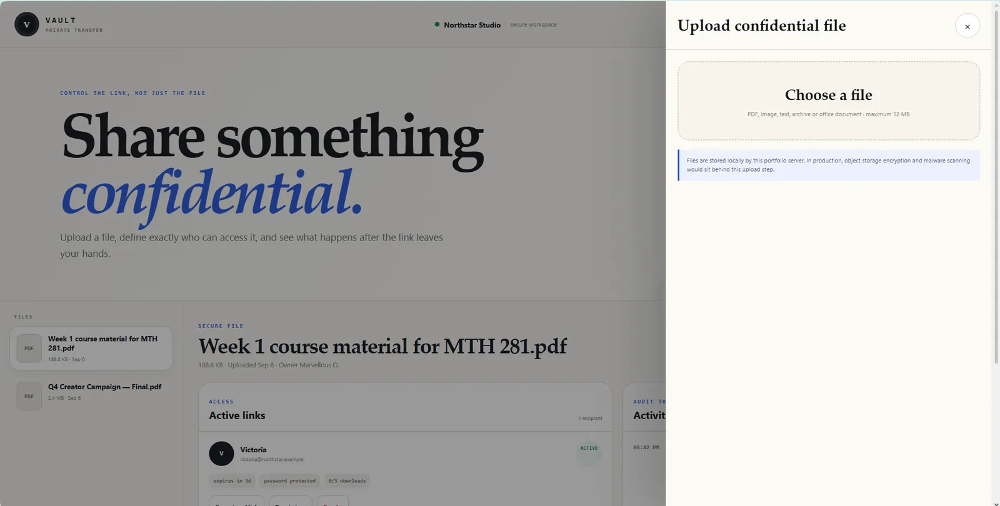
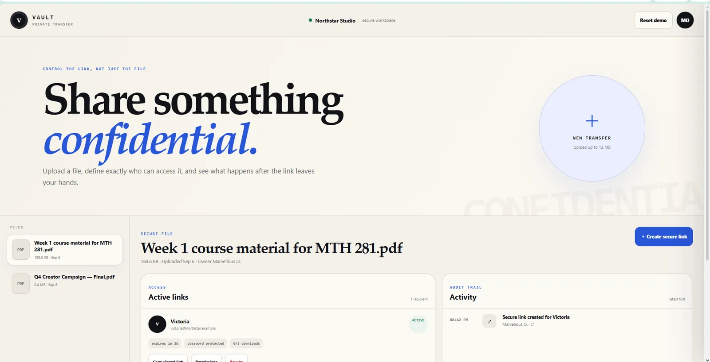
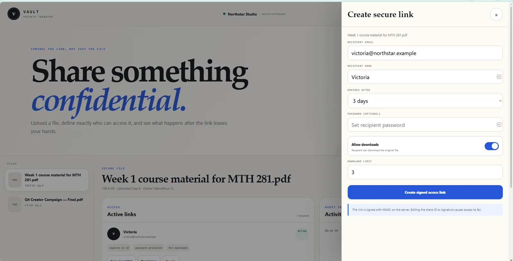
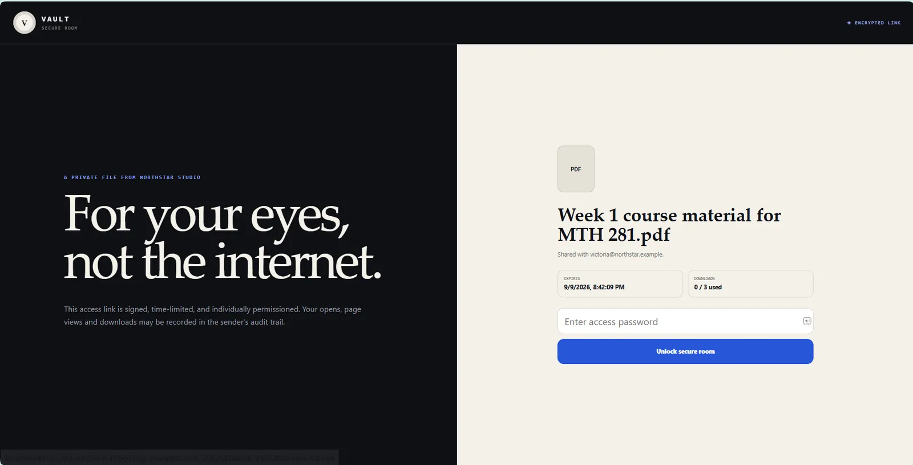
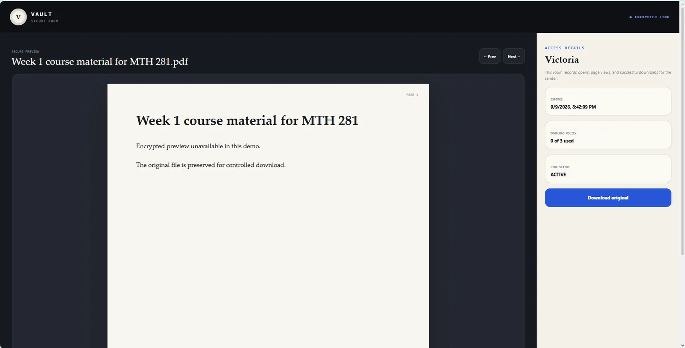

CREATE A SHARE
A file-sharing record starts with the file and the intended recipient context.


File sharing needs to answer not only “can I send this?” but also who can open it, for how long, and what happens after the link exists.
Vault separates owner controls from the recipient Secure Room and keeps access, expiry, password and activity rules explicit.



This section reads the supplied artifacts as product evidence: what the interface has to keep understandable, connected or constrained.
A file-sharing record starts with the file and the intended recipient context.
Signed links, expiry and recipient controls define who can use the share and for how long.
The interface exposes the rules around access instead of treating a link as permanently valid.
Access and sharing events remain part of the file record after the link is created.
A compact contact sheet keeps the page readable; select any frame to inspect it at full size.